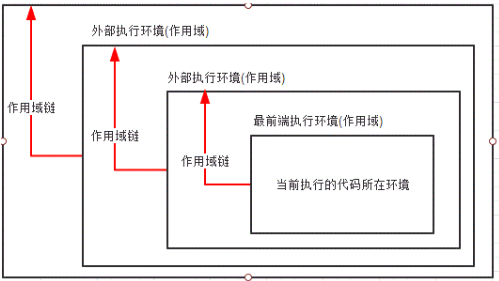

执行环境分成两种类型。
全局执行环境
是最外层的执行环境，在浏览器环境中，就是window对象。
函数执行环境
每个函数都有自己的执行环境，每进入一个函数时，函数的执行环境就被推到一个环境栈中。在函数执行完以后，这个执行环境会弹栈。
与全局执行环境、函数执行环境的对应的，这里有全局作用域、局部作用域的概念。
其实，全局与局部作用域的访问权限，是由作用域链决定的。
为了搜索变量、函数，每进入一个新的执行环境都会创建一个作用域链。作用域链会保存，函数定义环境的（也就是当前函数的外层）有权访问的的变量和函数，
如下图所示。

作用域链的最前端始终是当前执行的代码所在环境的变量对象（如果该环境是函数，则将其活动对象作为变量对象），下一个变量对象来自包含环境（包含当前还行环境的环境），下一个变量对象来自包含环境的包含环境，依次往上，直到全局执行环境的变量对象。全局执行环境的变量对象始终是作用域链中的最后一个对象。
标识符解析是沿着作用域一级一级的向上搜索标识符的过程。搜索过程始终是从作用域的前端逐地向后回溯，直到找到标识符（找不到，就会导致错误发生）。
函数的局部环境可以访问函数作用域中的变量，也可以访问和操作父环境（包含环境）乃至全局环境中的变量。
父环境只能访问包含其的环境和自己环境中的变量和函数，不能访问其子环境中的变量和函数。
全局环境只能访问全局环境中的变量和函数，不能直接访问局部环境中的任何数据。
其实，函数的局部环境可以访问函数作用域中的变量，就是闭包。
function a(){
let xxx = 1;
log();
function log(){
console.log(xxx);
}
}var a = 1;
c();
function c(){
console.log(a); // undefined
var a = 2;
}解析器在函数执行环境中发现变量a，因此不再上层查找。但是console.log（a）时还未赋值，所以打印undefined。上面的代码等价于：
var a = 1;
c();
function c(){
var a;
console.log(a); // undefined
a = 2;
}这种现象就是变量提升。
注意，上面这段代码如果var改成let。
let a = 1;
c();
function c(){
console.log(a); // 报错
let a = 2;
}此时，会形成暂时性死区，let在预解析过程中不会被提升。
c()
function c(){
//...
}函数在预解析过程中也会发生提升现象。
注意：只有函数声明形式才能被提升！！
c(); //会报错
var c = function(){
}